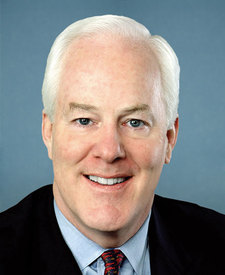

John Cornyn
سناتور، جمهوریخواه، تگزاس
John Cornyn دربارهٔ ایران ۱۶ از ۲۰ میگیرد (۸۰ از ۱۰۰).
- پشتیبانی از شاهزاده رضا پهلویهنوز سندی نداریم
- خواهان پایان جمهوری اسلامی۱۰۰
- ایستادن کنار مردم ایران۱۰۰
- بیپیوند با مجاهدین خلق۴ پیوند: ۲۰ امتیاز کسر
نمره میانگین سه سنجهٔ نخست است (هر کدام که عدد دارد)، منهای امتیازی که پیوند با مجاهدین خلق کم میکند. روش نمرهدهی
پشتیبانی از شاهزاده رضا پهلوی
هنوز سندی نداریم
با او دیدار کرده، آشکارا از او پشتیبانی کرده یا از کاخ سفید خواسته با او کار کند. نمایندهای که بگوید ایرانیان پادشاهی را رد کردهاند در ستون مخالف مینشیند.
سندی نداریم که نشان دهد John Cornyn دربارهٔ شاهزاده رضا پهلوی چه گفته یا چه کرده است. شما دیدهاید؟ یک سخنرانی، یک دیدار، یک نوشته، یک نامه.
سندش را بفرستیدخواهان پایان جمهوری اسلامی
۱۰۰از ۱۰۰
به تحریم و فشار رأی میدهد، با هر توافقی که رژیم را زنده نگه دارد مخالف است و به بیرون کشیدن نیروهای آمریکا از نبرد رأی نمیدهد.
- همسو
رأی مخالف داد: قطعنامهٔ اختیارات جنگ دربارهٔ ایران (H.Con.Res. 89) رأی کلیدی، دو برابر شمرده میشود
از رئیسجمهور میخواهد نیروهای آمریکا را از درگیری با جمهوری اسلامی بیرون بکشد. رأی مثبت به این قطعنامه یعنی رأی به بیرون کشیدن نیروهای آمریکا از نبرد با جمهوری اسلامی.
۲۴ سپتامبر ۲۰۲۶ · سند رسمی
- همسو
رأی مخالف داد: قطعنامهٔ اختیارات جنگ دربارهٔ ایران (S.J.Res. 181)
از رئیسجمهور میخواست نیروهای آمریکا را از هر درگیری در خاک جمهوری اسلامی یا علیه آن که کنگره مجوزش را نداده بیرون بکشد. رأی مثبت به این قطعنامه یعنی رأی به بیرون کشیدن نیروهای آمریکا از نبرد با جمهوری اسلامی.
۳۰ ژوئیه ۲۰۲۶ · سند رسمی
- همسو
رأی مخالف داد: قطعنامهٔ اختیارات جنگ دربارهٔ ایران (H.Con.Res. 86) رأی کلیدی، دو برابر شمرده میشود
از رئیسجمهور میخواهد نیروهای آمریکا را از درگیری با جمهوری اسلامی بیرون بکشد، جز نیروهایی که برای دفاع از آمریکا یا یک متحد در برابر حملهٔ قریبالوقوع لازماند، مگر آنکه کنگره مجوز بدهد. رأی مثبت به این قطعنامه یعنی رأی به بیرون کشیدن نیروهای آمریکا از نبرد با جمهوری اسلامی.
۲۳ ژوئن ۲۰۲۶ · سند رسمی
- همسو
رأی مخالف داد: قطعنامهٔ اختیارات جنگ دربارهٔ ایران (S.J.Res. 163)
از رئیسجمهور میخواست نیروهای آمریکا را از هر درگیری در خاک جمهوری اسلامی یا علیه آن که کنگره مجوزش را نداده بیرون بکشد. رأی مثبت به این قطعنامه یعنی رأی به بیرون کشیدن نیروهای آمریکا از نبرد با جمهوری اسلامی.
۱۳ مه ۲۰۲۶ · سند رسمی
- همسو
رأی مخالف داد: قطعنامهٔ اختیارات جنگ دربارهٔ ایران (S.J.Res. 123)
از رئیسجمهور میخواست نیروهای آمریکا را از هر درگیری در خاک جمهوری اسلامی یا علیه آن که کنگره مجوزش را نداده بیرون بکشد. رأی مثبت به این قطعنامه یعنی رأی به بیرون کشیدن نیروهای آمریکا از نبرد با جمهوری اسلامی.
۱۵ آوریل ۲۰۲۶ · سند رسمی
- همسو
رأی مخالف داد: قطعنامهٔ اختیارات جنگ دربارهٔ ایران (S.J.Res. 118)
از رئیسجمهور میخواست نیروهای آمریکا را از هر درگیری در خاک جمهوری اسلامی یا علیه آن که کنگره مجوزش را نداده بیرون بکشد. رأی مثبت به این قطعنامه یعنی رأی به بیرون کشیدن نیروهای آمریکا از نبرد با جمهوری اسلامی.
۱۸ مارس ۲۰۲۶ · سند رسمی
- همسو
رأی مخالف داد: قطعنامهٔ اختیارات جنگ دربارهٔ ایران (S.J.Res. 104) رأی کلیدی، دو برابر شمرده میشود
از رئیسجمهور میخواست نیروهای آمریکا را از هر درگیری در خاک جمهوری اسلامی یا علیه آن که کنگره مجوزش را نداده بیرون بکشد. رأی مثبت به این قطعنامه یعنی رأی به بیرون کشیدن نیروهای آمریکا از نبرد با جمهوری اسلامی.
۴ مارس ۲۰۲۶ · سند رسمی
- همسو
رأی مخالف داد: قطعنامهٔ اختیارات جنگ پس از حملههای ژوئن ۲۰۲۵ (S.J.Res. 59) رأی کلیدی، دو برابر شمرده میشود
از رئیسجمهور میخواست نیروهای آمریکا را از درگیری با جمهوری اسلامی بیرون بکشد، مگر با مجوز کنگره. چند روز پس از حملهٔ آمریکا به تأسیسات هستهای جمهوری اسلامی به رأی گذاشته شد. رأی مثبت به آن یعنی بستن دست رئیسجمهور در برابر رژیم.
۲۷ ژوئن ۲۰۲۵ · سند رسمی
- همسو
امضا کرد: قانون تحریمهای تقویتشدهٔ ایران، ۲۰۲۵ (S. 556)
نسخهٔ سنا. هر شرکت، بندر، پالایشگاه یا کشتی خارجی را که به فرآوری، صادرات یا فروش نفت و گاز جمهوری اسلامی کمک کند تحریم میکند. پول نفتی را هدف میگیرد که رژیم را سرپا نگه داشته است.
۱۲ فوریه ۲۰۲۵ · سند رسمی
- همسو
رأی موافق داد: پیشنهاد کروز دربارهٔ H.R. 4521: تحریمهای تروریستی بانک مرکزی و سپاه بماند
از مذاکرهکنندگان سنا در لایحهٔ رقابت با چین میخواهد بر محدود کردن همکاری چین و جمهوری اسلامی از راه تحریمهای تروریستی بانک مرکزی ایران و سپاه پاسداران پافشاری کنند. از ماندن تحریمهای تروریستی بر بانک رژیم و نیروی مسلح اصلی آن پشتیبانی میکند.
۴ مه ۲۰۲۲ · سند رسمی
- همسو
رأی موافق داد: پیشنهاد لنکفورد دربارهٔ H.R. 4521: توافق هستهای نباید تحریم سپاه را بردارد
از مذاکرهکنندگان سنا میخواهد پافشاری کنند که هر توافق هستهای با جمهوری اسلامی موشکها، تروریسم و دور زدن تحریمها را هم در بر بگیرد، تحریم سپاه پاسداران را برندارد و نام آن را از فهرست تروریستی بیرون نیاورد. با توافق هستهایای که به رژیم گشایش تحریمی بدهد مخالف است.
۴ مه ۲۰۲۲ · سند رسمی
ایستادن کنار مردم ایران
۱۰۰از ۱۰۰
از مردمِ در خیابان پشتیبانی میکند: تحریم کسانی که آنان را میکشند، اینترنت آزاد وقتی رژیم قطعش میکند، و ایستادن رسمی کنگره کنار مردم.
- همسو
امضا کرد: قانون حقوق بشر، آزادی اینترنت و پاسخگویی در ایران، ۲۰۲۶ (S. 3900)
نسخهٔ سنا. دسترسی ایرانیان به اینترنت را هنگام قطعیهای رژیم گسترش میدهد، تحریم ناقضان حقوق بشر را اجرا میکند و برای پخش برنامه و ابزارهای امنیت آنلاین کنشگران و روزنامهنگاران ایرانی بودجه میگذارد. به ایرانیانی که در برابر رژیم ایستادهاند کمک عملی میکند.
۲۴ فوریه ۲۰۲۶ · سند رسمی
بیپیوند با مجاهدین خلق
۲۰امتیاز کسر از نمره
مجاهدین خلق گروهی تبعیدی به رهبری مریم رجوی است که کنار صدام حسین با ایران جنگید. امضای قطعنامههای آن در کنگره یا سخنرانی در برنامههایش پیوند به شمار میآید.
- پیوند
در همایش دسامبر ۲۰۲۵ سنا که رجوی در آن سخنرانی کرد سخن گفت؛ به گزارش شورای ملی مقاومت، از سفر سال ۲۰۱۷ خود به آلبانی برای دیدار از اشرف ۳ یاد کرد و قول داد به پشتیبانی از اپوزیسیون ادامه دهد.
in any way that I can.
۱۱ دسامبر ۲۰۲۵ · Bipartisan Senate Forum Rallies Behind Maryam Rajavi's Democratic Alternative for Iran (NCRI)
- پیوند
امضا کرد: قطعنامهٔ پشتیبانی از ساکنان اشرف ۳ در آلبانی (S.Res. 145)
میگوید ایرانیان تبعیدی ساکن اشرف ۳، اردوگاه مجاهدین خلق در آلبانی، باید در فعالیت سیاسی آزاد باشند و در متن خود از پشتیبانی جهانی از «برنامهٔ دهمادهای خانم مریم رجوی برای آیندهٔ ایران» یاد میکند. اشرف ۳ اردوگاه مجاهدین خلق است و متن قطعنامه برنامهٔ مریم رجوی را آیندهٔ ایران مینامد. برای همین امضای آن پیوند با مجاهدین خلق به شمار میآید.
۲۷ مارس ۲۰۲۵ · سند رسمی
- پیوند
امضا کرد: قطعنامهٔ پشتیبانی از ساکنان اشرف ۳ در آلبانی (S.Res. 599)
میگوید ایرانیان تبعیدی ساکن اشرف ۳، اردوگاه مجاهدین خلق در آلبانی، باید در فعالیت سیاسی آزاد باشند و در متن خود از پشتیبانی جهانی از «برنامهٔ دهمادهای خانم مریم رجوی برای آیندهٔ ایران» یاد میکند. اشرف ۳ اردوگاه مجاهدین خلق است و متن قطعنامه برنامهٔ مریم رجوی را آیندهٔ ایران مینامد. برای همین امضای آن پیوند با مجاهدین خلق به شمار میآید.
۲۰ مارس ۲۰۲۴ · سند رسمی
- پیوند
برای اجلاس جهانی «ایران آزاد ۲۰۲۱» شورای ملی مقاومت پیام فرستاد.
America stands in full solidarity with the Iranian people, and we echo their call for liberty, democracy, and peace.
۱۰ ژوئیه ۲۰۲۱ · Live Report: Free Iran 2021 World Summit, The Democratic Alternative on the March to Victory (NCRI)
John Cornyn برای مردم تگزاس کار میکند. اگر آنجا زندگی میکنید، دفترش به شما پاسخگوست: cornyn.senate.gov
شمرده شوید. عضو کارنامه شوید.
اعضا رأی میدهند که یک نمره منصفانه است یا نه، و نوشتههایشان روی صفحه میآید. فقط یک نام و یک ایمیل میخواهد.
نظر شما
بگویید دربارهٔ یک نمره چه فکر میکنید، ویدیو بفرستید، یا سندی را که ما نداریم برسانید. پیش از انتشار همه را میخوانیم و هر چه درست باشد اصلاح میکنیم.
هیچ چیز خصوصی دربارهٔ هیچکس ننویسید. چه چیزی منتشر میشود و چه چیزی نه